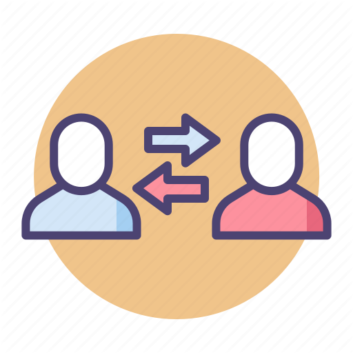
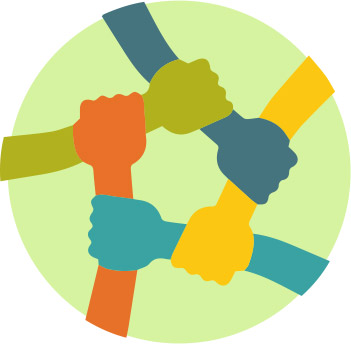

In this retrospective, we answer these questions:
I. How did the project change from your initial (iteration 0) vision or stories, or did it work out as predicted?
The project worked out as expected, we finished most of the intended features in the beginning. We also added some more features to work on in later interations but realized we did not have enough time for them.
During our meetings before the Iteration 1 release, we identified adjustments to our plans of what features we needed to complete before this release. We pushed 10 unbegun features as well as one feature that was partially complete and required more development and testing to iteration 2 (Iteration 2 Milestone) as our time estimates for some features (we laid down before iteration 0) weren’t accurate. The partially complete feature that we had to push was Create Personal Account Issue #6, as we implemented a part of the feature, where the user could create a new account and login using their credentials, but we weren’t able to get started on the part where they would be able to rent and store purchased music in their account. Additionally, we had to revise our plan for the architecture so that the UI communicated with the Logic layer and not the Data layer directly. We also took into account the feedback from Iteration 0 and modified our developer tasks and features accordingly so that they conveyed what they were capable of more clearly.
II. Are you using any specific techniques covered in the course (TDD, pair programming, scrums, etc)?
For Iteration 1:We created a mock validator for the credit card information, where we did not actually validate the payment information but just made sure it was numeric. For Iteration 2, we created validation methods (using Luhn’s algorithm, validating expiry date properly, etc.) and also threw proper exceptions so that the UI and other layers can respond to those exceptions properly.
- Luhn's Algorithm, CVV Validator, Expiry date Calculator
- This is a Deliberate Prudent technical debt as we had to implement it for Iteration 1 to partially work but we fixed it in due time for the second release and dealt with it. We also knew that we would have to fix it in the future for the second release, which makes this debt Deliberate Prudent.
- On click response, Click handling
- This is a Inadvertent Prudent technical debt as we weren’t aware of things like creating contexts and calling methods from another view, but we learnt how to do it after our first release so we worked on it and made it work as we expected it to.
We committed a whole lot more. We made much more effort to branch effectively and had fewer issues caused by merges. We more clearly split work between members which resulted in less duplicate work initially. However, we had more issues with organization and had to change the architecture to adapt to issues with integration. Some of our issues did not become apparent early on which led to time crunches. We also had to rewrite some code in order to avoid SOLID violations and inheritance issues, which ends up being the same as duplicate work in the long run. We have solved much of our technical debt from iteration 1, but have replaced it with different technical debt instead.
II. What did you learn about team or large project development? What will you start doing, keep doing, or stop doing next time?
From this project, we have learned several key lessons
-

Clear Communication
Effective communication ensures all team members are aligned with the project's vision, goals, and priorities. Hence, it is an important factor that helps in avoiding misunderstandings and ensures everyone is on the same page.
-
Flexibility and Adaptability
Being open to change and adaptation is necessary in the dynamic environment of large project development. Requirements may evolve, and unforeseen challenges may arise, so the team must be ready to adjust our plans and strategies accordingly.
-

Collaboration and Teamwork
Encouraging collaboration and a positive team environment is important for maximizing productivity and creativity. Each team member brings unique perspectives to the project which can lead to innovative solutions.
III. Can you draw any conclusions from what you’ve done?
The project's first iteration concluded with successful completion of most intended features, though adjustments were necessary due to time constraints and evolving requirements. Throughout, effective communication, flexibility, adaptability, collaboration, and teamwork were pivotal, enabling alignment, adaptation to changes, and fostering a positive environment conducive to innovation. As the project progresses, adherence to these principles will continue guiding the team toward successful outcomes.